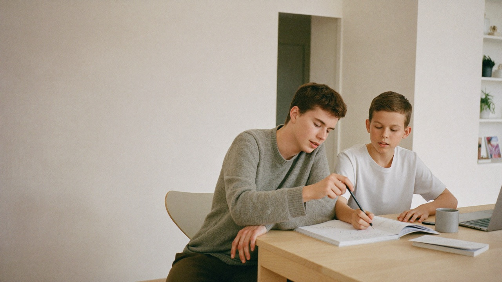

Utveckling ni
kan följa.
Det svåraste med läxhjälp är sällan själva passet. Det är att veta vad som händer mellan dem.

Allt på ett ställe.
När matchningen är klar låses studievyn upp. Där ligger studieplanen, kommande pass, meddelanden och rapporten från varje tillfälle.
Rapporten skrivs av studiehjälparen efter passet och beskriver vad ni gick igenom och hur det gick. Den är inte en formalitet — ett pass räknas som genomfört först när den är skriven.
Elev och förälder ser samma sak. Ingen behöver fråga hur det gick, och ingen behöver komma ihåg att berätta.
Elevens utveckling Senaste 6 veckorna
Kommande studiepass
Studieplan
Mål: trygg med ekvationer inför provet v.14. Vi går igenom en uppgiftstyp per pass och avslutar med repetition.
Senaste rapport Skickad efter passet
Vi repeterade ekvationer med parenteser. Det gick trögt i början men lossnade mot slutet — hen löste de tre sista uppgifterna själv. Till nästa gång: uppgift 12–18 i boken.
Så kan ett pass se ut.
Passen ser olika ut beroende på ämne och behov, men rytmen brukar likna det här.
Boka inom studiehjälparens tider, online eller på plats, en till tre timmar.
Studiehjälparen utgår från studieplanen och det som var svårt sist. Målet är inte att bli klar med läxan, utan att förstå den.
Vad ni gick igenom, hur det gick och vad som är nästa steg. Ni läser den i studievyn samma kväll.
Fyra saker vi står för.
Inget av det här är extratjänster. Det ingår i timpriset, oavsett ämne.
Vi väljer studiehjälpare utifrån ämne, nivå, behov och personlighet — inte utifrån vem som råkar vara ledig. Känns matchningen fel gör vi om den.
Skriven för eleven, inte för årskursen. Den utgår från var eleven faktiskt står och uppdateras allteftersom.
Så att utvecklingen går att följa mellan tillfällena. Rapporten är också det som avgör att passet räknas som genomfört.
Verifierade studiehjälpare, betalning och kommunikation genom plattformen — aldrig direkt mellan familj och studiehjälpare.
Redo att ta nästa steg?
För dig som vill lära dig mer. För dig som vill hjälpa andra.
- Ingen bindningstid
- Kostar ingenting att fråga